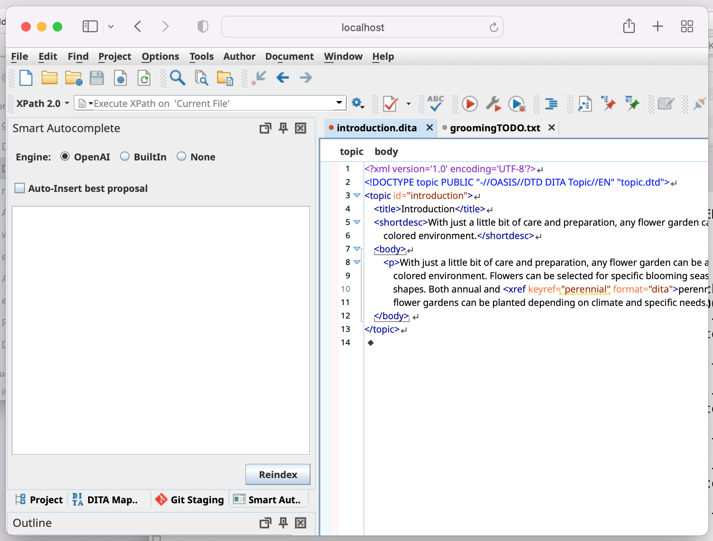

Since Oxygen XML Editor is a Java Swing-based application, this blog post explains how
Oxygen XML Editor could be accessed remotely and used from a web browser.Figure 1. Oxygen XML Editor Running in the Safari Web Browser Using JetBrains
Projector

To prepare an Oxygen XML Editor installation on the server side for running in a web
browser:
Download the Jetbrains projector server and unzip it in the
Oxygen installation folder (the folder path should be something like:
oxygen/projector-server-1.5.0).
Create a start-projector-oxygen.bat script in the
oxygen installation folder so that it adds the JetBrains libraries
to the classpath and runs the JetBrains server giving it the name of the main class as a
parameter to run it with the
contents:
@echo off
SET CP="%~dp0;%~dp0/classes;%~dp0/lib/oxygen-basic-utilities.jar;%~dp0/lib/oxygen.jar;%~dp0/projector-server-1.5.0/lib/*"
%~dp0\jbr\bin\java.exe %OXYGEN_JAVA_OPTIONS% -Dcom.oxygenxml.app.descriptor=ro.sync.exml.EditorFrameDescriptor -cp %CP% -Dorg.jetbrains.projector.server.classToLaunch=ro.sync.exml.Oxygen org.jetbrains.projector.server.ProjectorLauncher %*
Run the start-projector-oxygen.bat script, which will start an HTTP
server on port 8887 by default.
Connect to the localhost:8887 port from the same computer or from
another computer using a web browser.
Result: You should be able to use Oxygen XML Editor in a web
browser and have full access to the server-side resources.